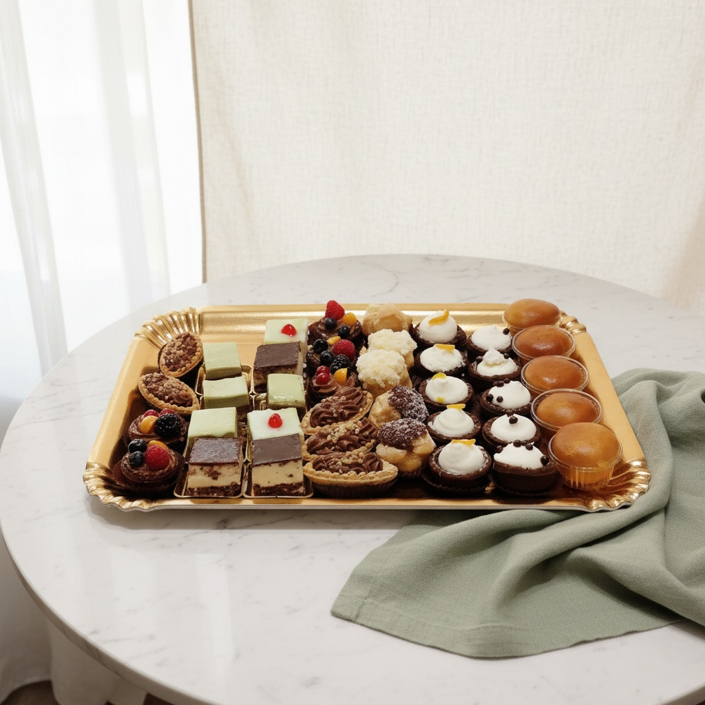
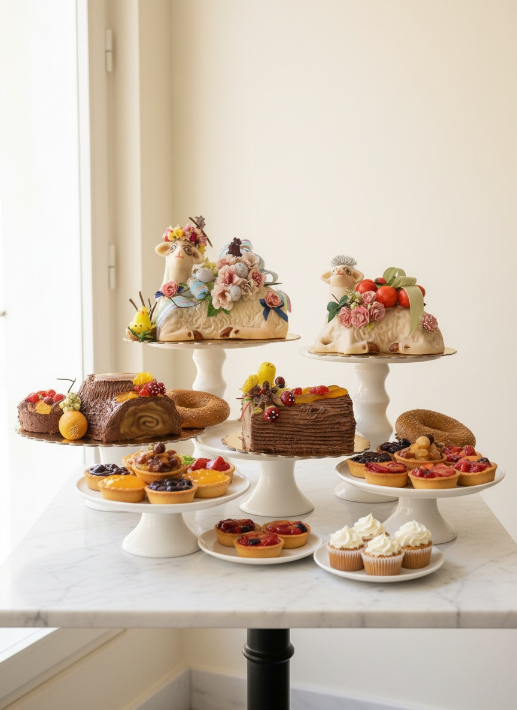
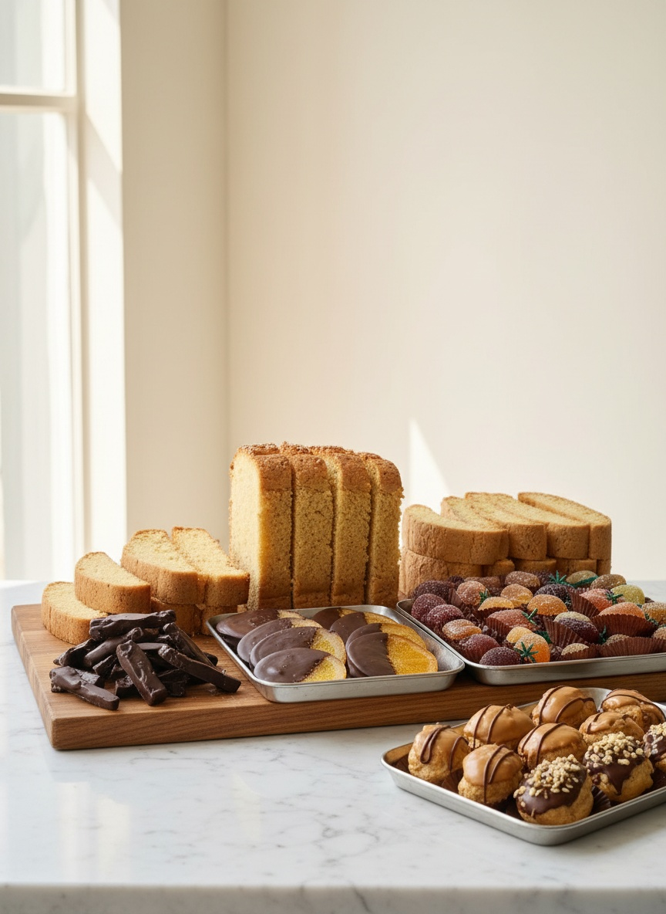
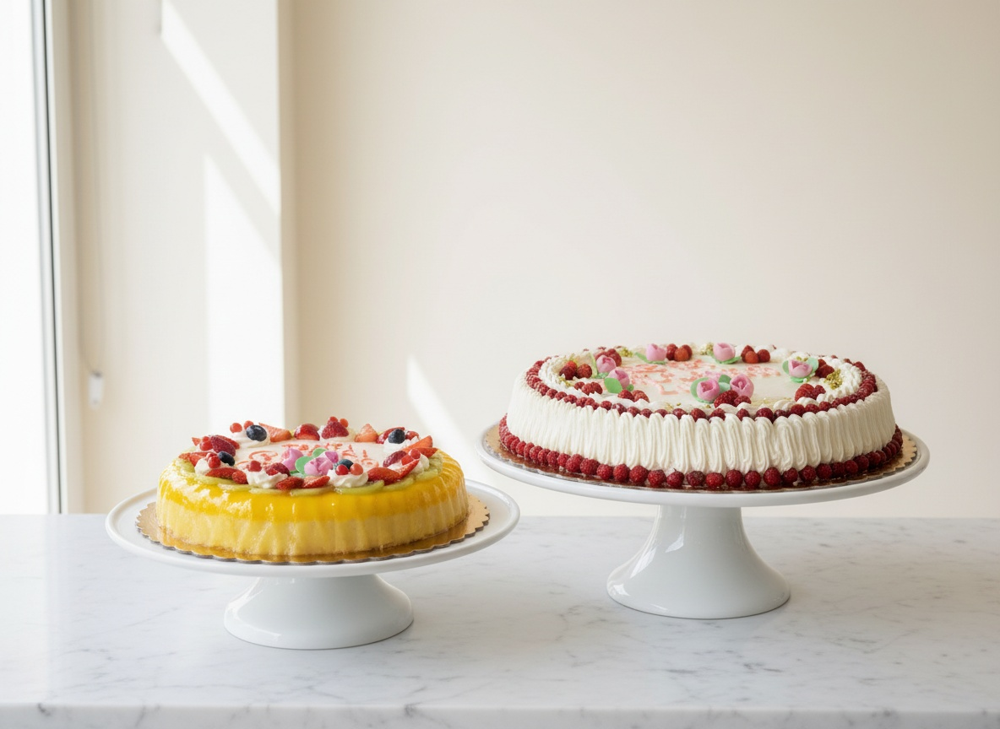
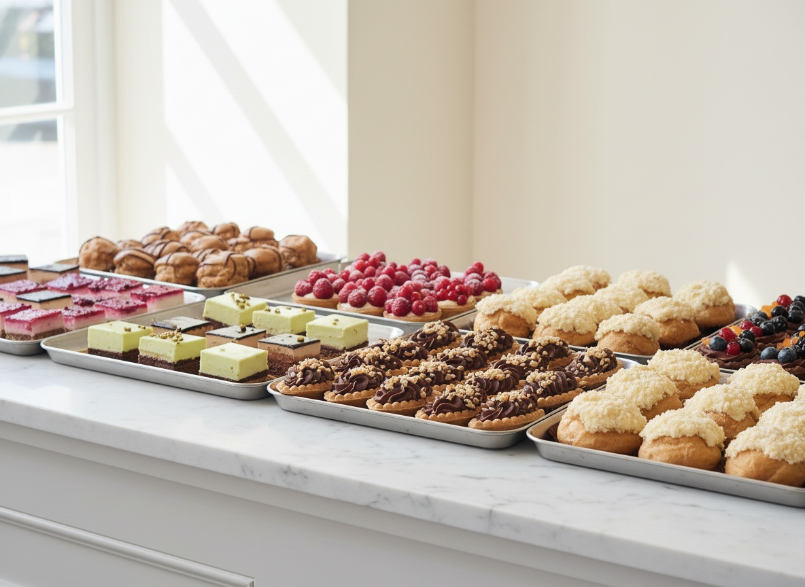
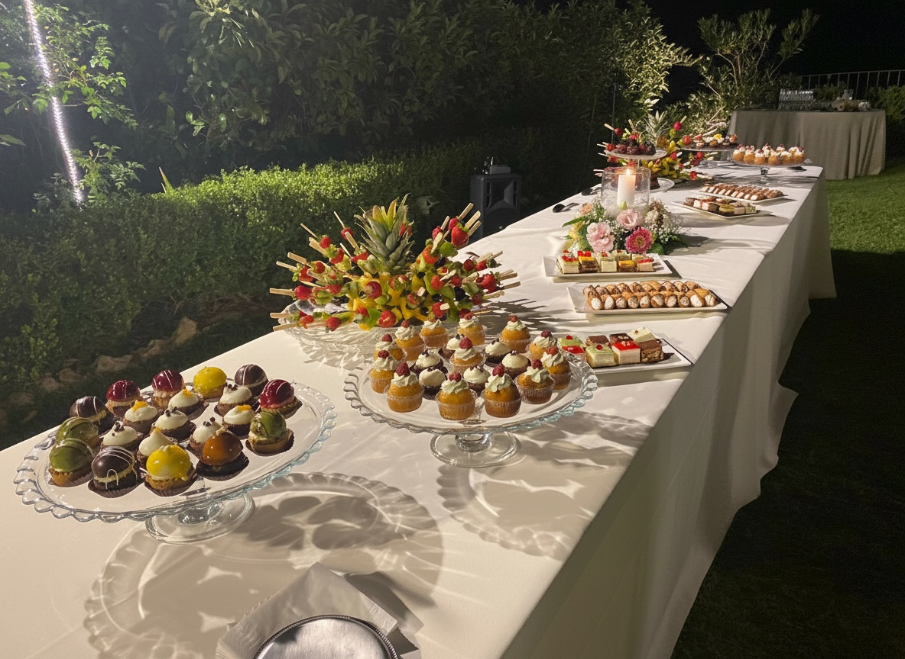

Un vassoio alla volta.
Il laboratorio del maestro Francesco Saccà prepara mignon, cassate, setteveli e torte su ordinazione. Per la domenica a casa o per il giorno più importante.

Il banco cambia. La mano no.
Tradizione siciliana e pasticceria moderna, preparate in giornata nel laboratorio dietro al banco.

La vetrina siciliana
Cassata, cannoli, pignolata e biscotteria di mandorla: i classici, eseguiti ogni giorno.

Il forno
Plumcake, crostate e biscotti da credenza, per la colazione di casa.

Torte su ordinazione
Setteveli, mimosa, frutta fresca o su disegno: si prenotano al banco o al telefono.

Mignon a vassoio
Si compone al banco, pezzo per pezzo. Nessun vassoio è uguale a un altro.

La festa è vostra. I dolci nostri.
Sweet table, torte cerimonia e mignon per eventi: il menù si decide insieme, il laboratorio prepara, noi allestiamo sul posto.
La mano è sempre la stessa.
La Pasticceria del Corso apre nel 2016 su Corso Cavour 173, nel centro di Messina. Il banco segue le stagioni; a guidare il laboratorio è il maestro pasticcere Francesco Saccà, con la sua squadra.
Su Google ha 4,7 su 5: le recensioni parlano soprattutto dei mignon, della cassata e della granita d’estate. Le consegne arrivano in Italia e all’estero, su ordinazione.